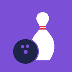

PinLog
ボウリングのスコアと残りピンを、なぞって記録
よくある質問
ピンはどうやって入力しますか？
投げたあと、倒したピンをタップするか、指でなぞってください。指を離すと少しあとに自動で記録されます（時間は「設定」で変えられます）。全部倒したときは「ストライク」「スペア」ボタンでも記録できます。
間違えて記録しました
「1投もどす」で直前の1投を取り消せます。終わったゲームも、ふりかえり画面の「入力画面で直す」から修正できます。
機種変更しても記録を残したい
「設定」→「iCloudにバックアップ」をオンにして、アプリを開き直してください。同じ Apple アカウントの iPhone に記録が届きます。「CSV書き出し」でファイルとして保存しておくこともできます。
近くのボウリング場が出てきません
位置情報が「使用中のみ」で許可されているか、iPhone の「設定」→「プライバシーとセキュリティ」→「位置情報サービス」で確認してください。見つからない場合は「手で登録する」から追加できます。
料金はかかりますか？
無料です。広告もありません。
PinLog Support
Swipe to log your bowling scores and pin leaves
k86666387@gmail.com
It helps if you include your iPhone model and iOS version.
FAQ
How do I enter pins?
After each throw, tap or swipe across the pins you knocked down. The throw is saved shortly after you lift your finger (you can change the delay in Settings). If all pins fall, you can also use the Strike or Spare button.
I entered something wrong
Tap "Undo last throw" to remove the last throw. For a finished game, open its review and tap "Edit in score entry".
How do I keep my records when I change phones?
Turn on Settings → "Back up to iCloud" and reopen the app. Your records will sync to iPhones signed in with the same Apple Account. You can also save them as files with "CSV Export".
Nearby bowling centers don't show up
Check that location access is set to "While Using the App" in Settings → Privacy & Security → Location Services. If a center isn't found, you can add it with "Add manually".
Is it free?
Yes. PinLog is free and has no ads.